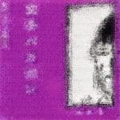

空手バカボン プロフィール トップ＞プロフィール
おーつきモヨ子（ヴォーカル、メインコンセプト）、ハヤブサのユウ（エレクトーン、ギター）の2人に有頂天のケラリーノ・サンドロビッチ（ヴォーカル）を加えたユニットが空手バカボン。1983年5月22日、渋谷ナイロン100％にて初めてライブを行って以来、今日まで断続的ではあるが活動を続けている。ケラが不参加の時には "空手アホゴン"と名乗ることもあったが、基本的にシークレット・ギグや飛び入りが多い。木魚のメンバーが合流した"空手木魚ボン"なんてのもあったみたい（1993年5月10日(月)筋少ちゃん祭り＠日清パワーステーション）。
"モヨ子（ひらがな表記のときもある）"の名の由来は、日本三大ミステリの一つにも挙げられる夢野久作著『ドグラ・マグラ』に出てくる呉モヨ子から。ハヤブサのユウは良く判らないが、なんとなく科学忍者隊ガッチャマンのメンバーに語呂が似ているので（コンドルのジョーとか）、その辺を文字ったのかも知れない。ケラ（KERA、ケラリーノ・サンドロビッチ）の由来は、学校の演劇部に入る際のオーディションで本人が歌った「虫けらの歌」から。本名は小林一三（かずみと読む。因みに誕生日は1963年1月3日）。

音楽的にはリズムボックスを使用した、おもちゃのような暗いテクノポップ、バンドとして完成する以前の筋少の原型ともいえるシュールなギャグ世界が延々と展開される。
これまでにナゴムから『バカボンのススメ』、『孤島の檻』、『バカボンの頭脳改革』と3枚のレコードがリリースされているほか、コンピレーション『はじまり-ナゴムオムニバス2』に2曲提供、その後にもCD『懐かしのナゴム傑作選 空手バカボン ベスト』（90年1月発売、再発は92年7月25日）が出ている。2005年8月24日にはアナログ盤収録のコント、未発表ライブ音源を含めた2枚組CD『空手バカボン ナゴム・コレクション』が発売された。
「あの素晴らしい愛をもう一度」のカバーからフォークのパロディをやっていた1stから、EL＆Pのアルバムタイトルを拝借しYMOの「ライディーン」やキング・クリムゾンのパロディをやるようになった3rdまでそれなりに変遷が見られるのが面白い。ここに収められた曲は昔筋少のライブでも演奏されていて、今はもう聴けなくなってしまったものも多いので、そういう意味でも貴重である。いずれにせよ、ブッチギれたような大槻のヴォーカルといい、インディーズでなければ歌えない過激な歌詞といい、その破壊的なパワーは実に痛快だ。
更に空バカのレパートリーだった曲が、後に筋少のナンバーとしてアレンジを加え、完成形に至った例も少なくない。「福耳の子供」や「から笑ふ孤島の鬼」といった内田得意の暗黒調の曲もそうだし、「日本の米」は『シスター・ストロベリー』で大ハードロックナンバーとして昇華され、「労働者M」は『サーカス団パノラマ島へ帰る』に収録されている。
現在の筋少の曲を聴き比べてみるのも一興。いわば空手バカボンは裏の筋少的な存在なのかもしれない。
ちなみに『ナゴムコレクション』リリース直後の2005年09月02日に記された「4ちゃんねる!!」上の大槻自身のコメントによると、「前回（引用者注：90年1月リリースの『懐かしのナゴム傑作選 空手バカボン ベスト』のこと）は印税契約もなく、一億枚売れたとてこちらには一銭も入ってこないデタラメ商品であったため一切協力する気もおこらなかったが、さすがに今回はそこら辺をキチンとクリアー。ミュージシャンの当然の権利が守られている」とのこと。
ケラのコメント
センター街にニューウェイブ喫茶があってね。今はなきナイロン100％ていう、50人も入ればいっぱいになっちゃうような所でソロやったんですよ。そのときゲストで大槻呼んだんですけど、そしたらなんか空手バカボンていうのをやるから、ケラさんも一緒に歌おう、とか言い出すの。もう当日で何にも決まってないんですよ、数時間後にはお客さん入るのに「俺が、か～らてバカボンて歌いますから、バカッ、バカッて入れてほしいんですよ」とか言っててね、え～っ、わかんないよ、なんて。で、いきなり本番でさぁ。やってるうちに、コレは別にわかんなくてもいいものなんだなって、それがわかった（笑）。
そういう雰囲気はずっとありますね。古いことばですけど、パフォーマンス（笑）。カラオケ自体あんまりなかった頃だから、なんていうか、寺山修司のハプニングですか。だからフランク・チキンズ出てきたとき思いましたよ、な～んだ、空バカのマネじゃん（笑）て。
「4ちゃんねる!!」の『空手バカボン ナゴムコレクション』セルフ・ライナーノーツ」より、大槻のコメント
「空手バカボン 結成のいきさつ」
そもそも一台のエレクトーンがきっかけであった。空バカのみならず、僕がロックを始めたのもこのエレクトーンの存在があったればこそなのだ。中学の同級生、内田雄一郎とコンビを組み、マンガ家を志していた当時15歳のオーケンであったが、作画作業の地道さに嫌気がさしていた。「もっと何かパッとした表現の手段はねぇもんか」とボヤけば内田氏が「うーん、そういえばうちの父がエレクトーンを買ったよ」と応えた。なんでもそいつで西城秀樹の「ギャランドゥ」などを父上は演奏しているらしい。
「ふ～ん……お！ よし、じゃあそいつで俺らロック始めようぜ！」
ロックの歴史を紐といたところで、エレクトーンを導入したロックバンドというものを聞いたことがない。当時、僕はエレクトーンとシンセサイザーの区別がついていなかったのだ。勘違いの思い付きに、しかし内田が同意する。
「よし！ じゃあ親父の部屋に集合だ」
どういうロックだよそれ。実際、エレキを持っている友人なんかも親父部屋に集め、内田の弾くエレクトーンを中心に、僕たちはロックバンドらしきものを始めた。舟木一夫の「銭形平次」などをカバー、ラジカセに吹き込み、その後みんなでコーラ飲みつつ聞き返しては「なんだよこれギャハハ！」と笑い合うという、まことに中坊魂に溢れたロック活動であった。ところがこのバカ・テープに尋常ならざる興味を示した者があった。ケラリーノ・サンドロビッチである。
元有頂天のボーカリスト、現在では劇団ナイロン100℃の主宰として、演劇界の大先生であらせられるあのケラさん。この頃は単に、内田氏の高校の先輩であった。どこで入手したのか我々のデモテープを聞き「スゴい！」と興奮。「君らのやっている筋肉少年少女隊ってバンドに俺も入れてくれ」と、スティック持って高円寺のスタジオに現れた。結局加入には至らなかったものの、「今度、渋谷の『ナイロン100%』ってロックカフェで、俺の作った自主映画の上映会やるんだよ。それに大槻と内田で何か組んで出てくれよ。で、そいつに俺も参加させてよ」と持ちかけてきた。
で、でっちあげたのが「空手バカボン」なんである。
ライブ当日、内田は法事かなんかで来なかった。それで仕方なく、例のエレクトーンで内田がカラオケを作り、それに合わせて大槻、ケラが唄うというユニット・スタイルが出来上がったのではなかったか？ちがうかな？ん～、覚えていない。
ライブの出来もひどいものであった（なんとその時の音源も今回のCDに収録されている。文句を言わせぬヒドさである）。だがケラさんは何が気に入ったのか、自分の作る自主制作盤レーベル「ナゴム」からソノシートを出す、と意気込んだ。とにかくヴァイタリティーのある人で、次々にライブもブッキングしてしまった。僕と内田は半ば彼に引っぱり回される形で、空手バカボンの活動を始めることになったのである。ちなみに内田氏は、その後も何度か法事でライブに来なかった。
「空手バカボン その名の由来」
中高生特有の言葉遊びから発生したに過ぎない。「空手バカ一代」と「天才バカボン」を合わせた造語。他に候補がいくつかあり、「片腕バカボン」「人間バカボン」「軍艦バカボン」が有力であった……どれでも同じや。
以下、2006年1月24日発売「uv vol.123」の「大槻ケンヂのザ・対談 猫対犬」より、内田雄一郎をゲストに迎えての”空手バカボン”スペシャル対談を・・・（ちなみに雑誌名の「uv」とは「ultra veat」の略。veat？？）。
ここをクリックすると・・・？？？
大槻「今回は空手バカボン復活ということで内田雄一郎に来てもらってるわけですが、まず、若いuv読者のために空手バカボンを説明しなきゃいけないね」
内田「そうだね」
大槻「空手バカボンとは何かというと、'80年代に大槻ケンヂと内田雄一郎と劇団ナイロン100℃の主催者であるケラという人物がやっていたカラオケ・ユニットなわけですが、でも、なんで始まったんだっけ？」
内田「ケラさんがナゴム・レコードを始めて、1枚目に有頂天のソノシートが出たわけですよ。その次に”2枚目何かやらない？”って僕がケラさんに振られて。そのときも筋肉少女帯だったか少年少女帯だったか、そんなようなバンドはやってたんだけど、バンドじゃなくてすぐできる適当ないい加減なものをやっちゃおうかっていう相談をしたわけですね、大槻に。17の夜に」
大槻「青春だなぁ（笑）。で、当時フランク・チキンズっていう日本人の女の子2人組がカラオケを流しながら歌うっていうユニットがイギリスでバカウケしてて、ケラさんに”フランク・チキンズみたいなのがいいよ”って言われた記憶があるんだよね」
内田「いや、フランク・チキンズが俺達の真似をしてるって言わなかったっけ？」
大槻「そうだっけ？ いや、当時のことは各自、脳内で修正されてるから。歴史だよね、もう。源のなんとかがモンゴルに渡ってチンギス・ハーンになったぐらい（笑）」
内田「なんとかはちょっとヒドいんじゃないか？ 義経ぐらいは言わないと」
大槻「あそっか（笑）。で、当時ナイロン100％っていうニューウェーヴの拠点みたいなカフェが渋谷にあって、そこでライヴをやったのは最初だったんだよね？」
内田「うん。しかもそのライヴには僕が法事でいなかったという（笑）」
大槻「しかも僕はなぜかエレキを持ってたっていう（笑）。で、そのナゴムっていうのを説明すると、ケラさんっていう人が始めたインディーズ・レーヴェルの先駆けで、その後『プロジェクトX』のナレーションでお馴染みの田口トモロヲであるとか、ニャースの声でお馴染みの犬山犬子とか、『紅白歌合戦』にも出た、たま。電気グルーヴの前身、人生とか本当にいろんな人が関わっていた、サブカル版トキワ荘・・・って言ってもわかんないか？」
内田「ふふふふふ（笑）」
大槻「その昔、手塚治虫を中心に石ノ森章太郎とか藤子不二雄とか赤塚不二夫なんていう有名マンガ家がトキワ荘っていう一軒のボロアパートに集っていたということがあるんですが、それに近い状態で。実際ケラさんは高円寺にナゴム・レコードの拠点として平和荘というボロアパートを借りてましたからね」
内田「よく覚えてるね」
大槻「で、ケラさんは内田の高校の先輩だったんだよね？」
内田「うん。学年が3つ上だから同時にはいないんだけど、軽音楽部にいた後輩とバンドを組んでたんですね」
大槻「よくいるさ、卒業しても学校に顔出してきて威張ってるダメな先輩（笑）」
内田「それが”伝染病”っていうバンドだったんだけど、その軽音楽部に僕と大槻が中学のときにやってた”ドンズ”っていうバンド（正確にはドテチンズ）のテープが流れて、これはおかしいから一緒にやろうよって先輩ケラが来たっていう」
大槻「あのテープなんで流れたんだっけ？」
内田「そこが歴史の謎なんですね。だって俺、美術部だったんだもん（笑）」
大槻「大陸が違うのにマンモスの骨がある、みたいな（笑）。で、結局、空バカの最後のライブっていつなの？」
内田「ナゴム・ストライクス・バック（'94年8月15日）」
大槻「ああ。ケラさんがやってた有頂天、僕と内田もやってた筋肉少女帯とかがメジャー・デビューして、たまもメジャー・デビューして、そこそこ人気になって。っていうとき渋谷公会堂で久し振りにナゴム・ライブやりましょうっていうときに空手バカボンをやったのが最後なんだよね。それにしても10年以上前か？ だってカセットテープでやってましたからね、ライヴを、空手バカボンは」
内田「やっても30分なかったからね、ライヴ。20分ぐらいで」
大槻「しかも必ず誰か忘れてくるの、そのカセット（笑）。で、3枚目のアルバムかな？ 『バカボンの頭脳改革』っていうときにMTRが導入されて”すごい！ 斬新だ！”とか言ってて（笑）。今、MTRなんてさ、よほどのバンドでもデモテープ作りにも使いませんよ。そういう時代ですからね、恐ろしいことですよ」
内田「最初の頃なんてエレクトーン一発手弾きだったからね」
大槻「しかも間違ってんの（笑）」
内田「だって面倒臭いじゃん（笑）。でもテープだけはいいものにしようってメタル・テープ買ってきて、1本2000円の。あれもどっか行っちゃったんだよなぁ」
大槻「DATもなかったもんなぁ」
内田「うん。だから、家でオケを録って、それをスタジオに持ってって流し込むんだけど、結局カセットのクオリティなんだよね（笑）。それに歌を乗せたりして。そういういい加減なスタンスをレコーディングでもとってましたね」
大槻「でも今エレクトーンの音って衝撃的かもしれないね。いいよなぁ、エレクトーン。ロック・バンドでエレクトーン使ってるのっているの？」
内田「いないね。あるんだけどね、スティーヴィー・ワンダーとかキース・エマーソンが使ってたのがエレクトーンの元祖だから」
大槻「どうなんだぁ。あと、空手バカボンはライヴの合間にコントもやってて」
内田「なんでやることになったんだ？」
大槻「有頂天や伝染病がライヴの合間にコントをやってて、それを観て”コントをやるもんなんだ！”っていう（笑）」
内田「今のナイロン100℃を観るように有頂天は当時からすごく芝居がかかったコントがいっぱいあって。それは当然、空手バカボンもやらざるを得ないだろうと」
大槻「だんだん重荷になってくるんだよね、あれね（苦笑）。で、たまにケラさんが書いてきたコントがあって、それがものすごくシュールだったんだよね、大韓航空機の話とか」
内田「いや、あれは日航機」
大槻「いや、大韓航空機だよ。だってやったもん、俺とケラさんがどっちかが飛行機になってどっちかがミサイルになって”撃墜シマ～ス！”とかなんとか言って」
内田「ああ～」
大槻「僕の記憶ではそのとき法事でいなかったような気がするんだけどな、キミが」
内田「いや、それはテープに入ってるもん、”キ～ン！”っていうの。だから、初めの頃に1時間ステージをやったんだよ、ネタもいっぱい書いて」
大槻「なんのとき？ ナイロン100％？」
内田「そう、その後のナイロン」
大槻「じゃあ2回やってるの、ナイロンは？」
内田「3回かな？ 何回かやってるよ」
大槻「そうかぁ～」
内田「で、がんばってやったらおもしろくなかったっていう（笑）」
大槻「そう！ 今でこそケラさんは大先生ですけどもね、演劇界の。当時ケラさんが考えるネタはウケなかった（笑）。僕の考える他愛もないバカコントの方がどっかんどっかんウケてたんだよね。きっとケラさんは高いところを目指してたんじゃないのかな？」
内田「ふふふふふ（笑）」
大槻「僕はお誕生日会みたいにその場で一発ギャグがウケればいいっていう感じだったんだけど、ケラさんはその先に演劇っていうのを見てたんだろうね」
内田「考えてみると、当時僕らは17歳だけどケラさんは20歳だったわけだから。その頃の3年は大きいよ」
大槻「でも考えてみたらさ、ハタチが高校生連れてさ、ダサい先輩だよね（笑）」
内田「あはははは（笑）」
大槻「ツッパリでよくいるよね、そういう人。16歳ぐらいのヤツ連れて威張ってるんだけど結局万引きで捕まっちゃったりとかさ（笑）。それのオタク版ていうところはあるわな、空バカは。今にして思えば」
内田「そんなに親分肌の人でもなかったけどね（笑）」
大槻「そういえば僕、今、ナゴム物語を書き始めたのよ」
内田「歴史の改竄をするのか（笑）！」
大槻「すごいしてる（笑）。で、まず内田くんのお父さんがエレクトーンを買ったときから話が始まって・・・」
内田「ほら、もう違う！」
大槻「えっ！？」
内田「僕が買ったんだよ、エレクトーンは」
大槻「そうなの！？ 知らなかった！」
内田「それで僕がエレクトーン弾かなくなっちゃったから父が弾き出したの」
大槻「そうだったんだ？ また嘘書いちゃった（笑）。でもナゴム物語は、2話までいって、ドンズ解散まで書いて、これはやっぱ筋少物語を先に書いた方がいいなと思って止まったところなんだよね」
内田「ふふふふふ（笑）」
2006年2月26日(Sun) 渋谷Club Quattro
空手バカボン セットリスト
0. オープニングSE（バカボンと戦慄partⅠ）
1. バカが戦車でやってくる
2. おおもうけバカボン
3. 来たるべき世界（本家YMOのオケをバックに）
4. 私はみまちゃん
5. のんきな兄さん
6. パヤパヤ
7. 福耳の子供
8. 家族の肖像
9. 労働者M
10. バカボンと戦慄partⅡ
以上、全曲ウッチーのiPod（＋ギター）による演奏。3人とも上着のみ人民服。
また、ザ・シンセサイザーズのアンコールでも大槻ケンヂ（黒の空バカTシャツ着用）、エレキコミックの谷井一郎を迎えて「労働者M」バンド・ヴァージョンが歌われた。
空手チョップをもう一度。TOPへ
はてなブックマークの情報を読み込んでいます。